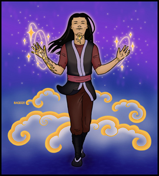
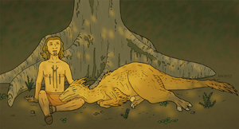
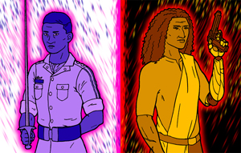
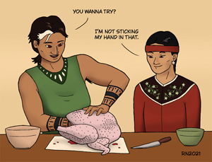
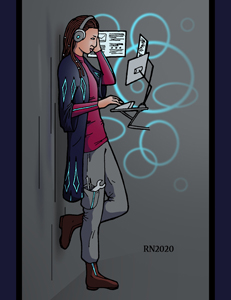
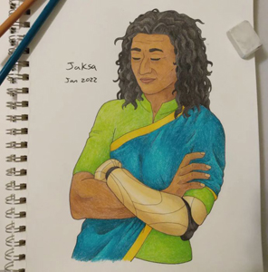
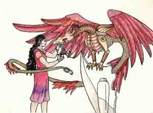
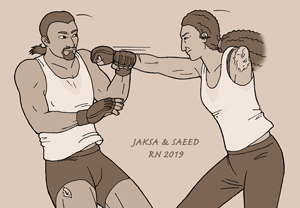
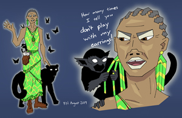

Riley Neither - Art
‹
›

This is a character in one of my short stories, possibly my favorite of all my short stories. It tackles some issues close to my heart. I won't say more—don't want to spoil anything.

This is Yeshet and zer raptor Tetziryah. Yeshet's one of the major characters in "What Springs from Bloodied Earth," a non-binary magician with a knack for animals.

Sinhi and Jaksa, Sync protagonists, siblings who have crossed paths for the first time in decades and don't know whether they're on the same side. (Technically, half-siblings, but they never really cared about the "half" part except as a means of allaying all the "Wow, you look nothing alike!" comments.)

A couple of the protagonists of Dust and Lightning, ostensibly preparing a meal together.

This is Corinne, a secondary character in Sync. She's autistic, very gay, and almost as obsessed with computers as with obscure audio romances.

A colored pencil sketch of Jaksa, one of the protagonists in Sync, in a rare calm moment. You can probably tell, I still haven't really got the hang of drawing those ringlet curls, but I'll get it eventually.
This was originally an illustration for a flash fiction piece I wrote several years ago, but I rather like it in its own right. It was also originally done in markers; trust me, this digital version is much cleaner.

This isn't tied to any specific story, just something I drew for the heck of it. Who needs an excuse for cool dragons and their mechanics?
Sahar and Asra, from a novellete of mine that starts with a twist on the Sleeping Beauty premise and then leaps off in new directions. I'm not normally much for fairytales, but I'd be lying if I said I don't have a soft spot for some good queer fantasy romance here and there.

Jaksa, Sync protagonist, sparring with her pilot Saeed. They spar regularly, and she splits it 50/50 whether to spar with or without her prosthetic arm; she likes to be able to hold her own in a fight either way.

This is the Demon Catcher! She only makes a brief appearance in one of my short stories, but she's such a good character, I ought to write more with her.
© Riley Neither